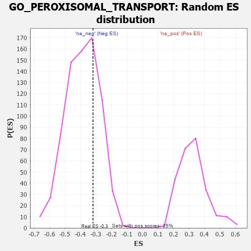

| | | Dataset | 7d |
| Phenotype | NoPhenotypeAvailable |
| Upregulated in class | na_neg |
| GeneSet | GO_PEROXISOMAL_TRANSPORT |
| Enrichment Score (ES) | -0.3192907 |
| Normalized Enrichment Score (NES) | -0.82236606 |
| Nominal p-value | 0.72386056 |
| FDR q-value | 0.98446786 |
| FWER p-Value | 1.0 |
Table: GSEA Results Summary
 Fig 1: Enrichment plot: GO_PEROXISOMAL_TRANSPORT
Fig 1: Enrichment plot: GO_PEROXISOMAL_TRANSPORT
Profile of the Running ES Score & Positions of GeneSet Members on the Rank Ordered List
| PROBE | GENE SYMBOL | GENE_TITLE | RANK IN GENE LIST | RANK METRIC SCORE | RUNNING ES | CORE ENRICHMENT | | 1 | PEX3 | | | 1287 | 0.432 | -0.1124 | No |
| 2 | PEX5 | | | 1313 | 0.427 | -0.0667 | No |
| 3 | ACOX3 | | | 1670 | 0.361 | -0.0701 | No |
| 4 | PEX2 | | | 2056 | 0.298 | -0.0845 | No |
| 5 | ECH1 | | | 2290 | 0.261 | -0.0839 | No |
| 6 | GNPAT | | | 2629 | 0.208 | -0.1025 | No |
| 7 | ECI2 | | | 2794 | 0.184 | -0.1021 | No |
| 8 | PEX1 | | | 2990 | 0.151 | -0.1094 | No |
| 9 | PEX10 | | | 3227 | 0.117 | -0.1257 | No |
| 10 | ABCD1 | | | 3677 | 0.047 | -0.1768 | No |
| 11 | HMGCL | | | 4141 | -0.031 | -0.2315 | No |
| 12 | AMACR | | | 4338 | -0.066 | -0.2485 | No |
| 13 | MPV17 | | | 4575 | -0.112 | -0.2654 | No |
| 14 | ABCD3 | | | 4829 | -0.164 | -0.2785 | No |
| 15 | DHRS4 | | | 4851 | -0.168 | -0.2619 | No |
| 16 | IDE | | | 5252 | -0.258 | -0.2827 | Yes |
| 17 | ACOT8 | | | 5364 | -0.288 | -0.2637 | Yes |
| 18 | ACOX2 | | | 5461 | -0.310 | -0.2403 | Yes |
| 19 | UBB | | | 6090 | -0.503 | -0.2617 | Yes |
| 20 | PEX12 | | | 6115 | -0.510 | -0.2063 | Yes |
| 21 | PEX13 | | | 6255 | -0.557 | -0.1600 | Yes |
| 22 | ABCD4 | | | 6349 | -0.597 | -0.1034 | Yes |
| 23 | PEX19 | | | 6569 | -0.693 | -0.0515 | Yes |
| 24 | PEX6 | | | 6605 | -0.713 | 0.0258 | Yes |
| 25 | UBC | | | 7410 | -1.274 | 0.0706 | Yes |
Table: GSEA details [plain text format]

Fig 2: GO_PEROXISOMAL_TRANSPORT: Random ES distribution
Gene set null distribution of ES for GO_PEROXISOMAL_TRANSPORT